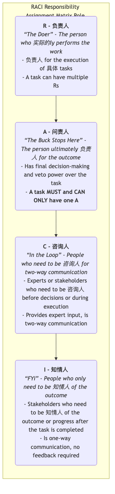

RACI责任分配矩阵¶
在任何一个稍具规模的项目或流程中，一个最常见、最令人头疼的问题，就是职责不清。当任务出现延误时，我们发现好几个人都以为别人会负责；当需要做出决策时，却找不到那个拥有最终拍板权的人；或者，一个简单的审批，却需要经过层层汇报，在无关的人员那里耽搁了大量时间。RACI责任分配矩阵（RACI Matrix），也常被称为RACI图，正是一个旨在解决这一普遍困境的、简单而极其有效的团队协作与沟通工具。
RACI的核心目标在于，通过一个清晰的矩阵，来明确地定义和沟通一个项目或流程中，各个任务（Tasks）与各个角色（Roles）之间的关系，确保每一项工作，其相关的权责都被清晰地分配给了具体的人。它旨在消除“这是谁该干的活？”的模糊地带，让团队中的每一个人，都能对自己和他人的职责一目了然，从而极大地提升协作效率、减少沟通成本和内部摩擦。
RACI是四种不同职责类型的首字母缩写：
-
R - 执行者（Responsible）
-
A - 负责人（Accountable）
-
C - 咨询对象（Consulted）
-
I - 知情对象（Informed）
RACI的四种角色详解¶
理解RACI的关键，在于精确地理解这四种不同层级的职责。

如何创建和使用RACI矩阵¶
-
第一步：识别并列出所有“任务”（纵轴）
- 将项目或流程，从头到尾地分解为一系列具体的、可执行的任务或交付成果。将它们作为矩阵的行，列在最左侧。
-
第二步：识别并列出所有“角色”（横轴）
- 识别出所有参与到这个项目或流程中的相关方，并将他们的角色（而非具体的人名，因为人员可能会变动）作为矩阵的列，写在最上方。例如，“项目经理”、“产品经理”、“前端开发”、“后端开发”、“法务顾问”等。
-
第三步：逐一填充矩阵，分配RACI
- 这是最核心的步骤。团队需要一起，逐行（即针对每一项任务），讨论并为每一个相关的角色，分配上R, A, C, I中的一个或多个字母。
- 关键规则：
- 每一行（每个任务）必须有且只有一个A。这是确保权责明确、避免无人负责或多人负责的关键。
- 每一行至少要有一个R，以确保有人去执行。
-
第四步：分析与优化矩阵（纵向与横向分析）
- 当矩阵初步填充完毕后，需要对其进行审视和优化，以发现潜在的协作问题。
- 按行分析（针对每个任务）：
- 没有A？：意味着无人对此任务负总责，需要立即指定一个A。
- 有多个A？：意味着权责不清，容易产生冲突，必须削减到只剩一个A。
- 没有R？：意味着这个任务只是个“空中楼阁”，没有人去执行。
- 太多的C？：意味着咨询环节可能过于冗长，拖慢决策速度。思考是否真的需要咨询这么多人？
- 太多的I？：意味着沟通成本可能过高。思考这些人是否真的都需要被告知？
- 按列分析（针对每个角色）：
- 某个角色的R太多？：意味着这个人可能任务过载，需要重新分配工作。
- 某个角色的A太多？：意味着权力可能过于集中，他是否是决策的瓶颈？
- 某个角色没有任何R或A？：思考这个角色是否有必要参与到这个流程中来？
-
第五步：达成共识并进行沟通
确保最终版本的RACI矩阵，得到了所有相关参与者的理解和认可。将其作为项目的官方文件，并进行公示，让它成为团队协作的“共同语言”和“行为准则”。
应用案例¶
案例一：一次产品发布流程
| 任务/角色 | 产品经理 | 市场经理 | 开发团队 | 设计团队 | 法务顾问 |
|---|---|---|---|---|---|
| 撰写产品需求文档 | A | C | R | C | I |
| 设计UI/UX | A | I | C | R | |
| 开发产品功能 | A | I | R | C | |
| 制定营销方案 | C | A | I | C | R |
| 审批营销文案 | I | A | I | C |
- 分析：从这个矩阵可以清晰地看到，产品经理对产品功能的开发负总责（A），而市场经理则对营销方案负总责（A）。法务顾问在营销文案上是“被咨询的（C）”，而在需求文档上仅是“被告知的（I）”。
案例二：一次家庭装修项目
- 任务：确定装修风格。
- 角色：丈夫、妻子、设计师、施工队长。
- RACI分配：
- R（执行者）：设计师（负责出设计方案）。
- A（负责人）：妻子（拥有最终的决定权）。
- C（咨询对象）：丈夫（需要发表意见，但无最终决定权）。
- I（知情对象）：施工队长（需要被告知最终的风格，以便进行施工准备）。
案例三：解决一个线上生产事故
- 任务：紧急修复线上Bug。
- 角色：技术总监、运维工程师、开发工程师、客服主管。
- RACI分配：
- R：开发工程师（负责编写和提交修复代码）。
- A：技术总监（对整个事故的处理结果和线上服务的恢复负总责）。
- C：运维工程师（在部署修复方案前，需要咨询其对服务器环境的影响）。
- I：客服主管（需要被告知修复进展，以便安抚客户）。
RACI矩阵的优势与挑战¶
核心优势
- 极大地澄清了权责：清晰地定义了谁做什么、谁决定、谁需要参与，消除了角色模糊和职责重叠。
- 提升了决策效率：通过明确唯一的A，避免了因权责不清而导致的决策延迟或冲突。
- 优化了沟通路径：清晰地区分了需要深度参与的C和只需单向告知的I，减少了不必要的沟通噪音。
- 便于新成员融入：为新加入团队的成员，提供了一份快速理解项目运作模式和自身职责的清晰指南。
潜在挑战
- 可能过于僵化：如果执行得过于教条，可能会限制团队的灵活性和自组织能力。RACI是一个沟通工具，而非官僚流程。
- 不能解决所有问题：它只定义了“谁做什么”，但没有定义“如何做”以及“何时完成”。它需要与项目计划、流程图等其他工具结合使用。
- 创建和维护成本：对于非常庞大和复杂的项目，创建和维护一个细致的RACI矩阵，本身就是一项不小的工作。
延伸与关联¶
- RACI的变体：
- RASCI：增加了一个S - Supportive（支持者）的角色，指那些为任务执行提供资源或支持的人。
- RACI-VS：增加了V - Verifier（验证者）和S - Signatory（签署者），用于需要进行正式测试和审批的场景。
- 项目管理：RACI矩阵是项目管理知识体系（PMBOK）中，进行人力资源规划和沟通管理的核心工具之一。
来源参考：RACI模型被认为是源于20世纪70年代的管理咨询实践，它作为一种角色和责任的澄清工具，在项目管理、IT服务管理（如ITIL框架）和组织设计等领域被广泛应用和推荐。